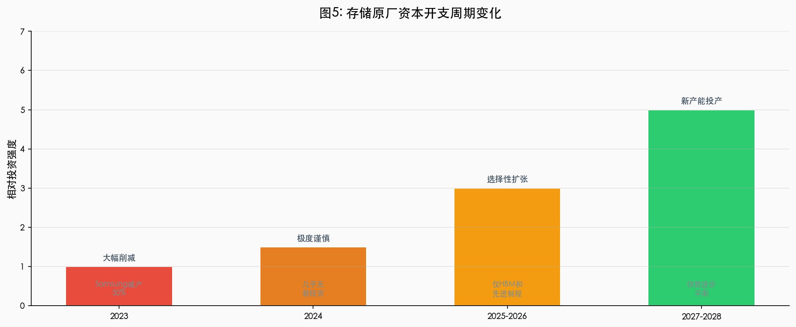

策略分析 / 资本开支周期
资本开支
周期策略
从极度谨慎到选择性扩张
资本开支的滞后性决定了短期供给无法快速响应需求。2026 年的产能无法缓解当前短缺，新产能最早 2027 年底投产，2028 年才可能显著影响市场。
关键数据
50%
Samsung 减产幅度
建设周期
18
+ 月
新 fab 建设周期
平衡时点
2028
供需可能再平衡
时期
CapEx 策略
影响
2023
大幅削减
为后续短缺埋下伏笔
2024
极度谨慎
产能扩张停滞
2025-2026
选择性扩张
常规 DRAM 未显著增加
2027-2028
新产能陆续投产
供需逐步平衡

周期图注：
资本开支的收缩与扩张并非线性，而是受供需错配与投资决策共同驱动的滞后过程。